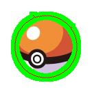

Project Description
This is the first project of MSBD6000C Computer Vision, you may find the introduction of it from here without password.
In this project, we created a tool that allows a user to cut an object out of one image and paste it into another. The tool helps the user trace the object by providing a "live wire" that automatically snaps to and wraps around the object of interest. Then we used the tool to create a composite image.
Artifacts
Atrifact 1: Good Night
Atrifact 2: I Want Them All
Develop Environment
Programming Language: C++
SDK: Desktop Qt 5.10.0 MSVC 2017 64-bit
OS: Windows
How To Use It
To load a picture, click File in the top left-hand corner of the screen. From the menu, choose Open. A File Explorer will come up. Choose the picture that you want to edit and double click on it.
The default mode is Work Mode, showing original image with contours superimposed on it. You can switch the mode between Work Mode and Debug Mode by clicking Mode and choosing the mode you want.
Work Mode
Show original image with contours superimposed on it.

Debug Mode
Pixel Node
Draw a cost graph with original image pixel colors at the center of each 3-by-3 window, and black everywhere else.
Cost Graph
Draw a cost graph with both pixel colors and link costs, where you can see whether your cost computation is reasonable or not, e.g., low cost (dark intensity) for links along image edges.
Path Tree
Show minimum path tree in the cost graph for the current seed. You can use the input box to simulate how the tree is computed by specifying the number of expanded nodes. By default, the number of expanded nodes is the number of pixels in the whole picture. The tree consists of links with yellow color. The back track direction (towards the seed) goes from light yellow to dark yellow.
Min Path
Show the minimum path between the current seed and the mouse position.
Notice: To use the Path Tree and Min Path in debug mode, you need to have an active seed point. the active seed point is the last Left Click / Ctrl + Left Click point on the contour you are working with, e.g., the contour that has not yet be committed by Enter / Ctrl + Enter. (See the short cut keys below)
In Work Mode, press Left Click to locate the first seed. Then, move the mouse and the wire along the edge will be displayed on the picture. Keep Left Click to create following seeds.
If you have created some seeds, press and hold Ctrl to finish the current contour, or press and hold Ctrl + Enter to finish the current contour as closed.
To save your work, click File in the menu and choose Save Mask to save compositing mask for PhotoShop, or choose Save Contour to save image with contour marked.